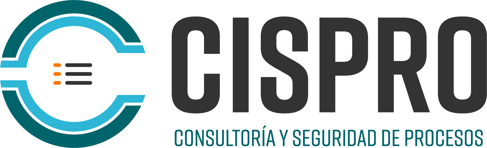

CISPRO
Consultoría y Seguridad de Procesos
Ing. Octavio Toledo Racillas | Representante Legal
Soluciones técnicas especializadas en seguridad de procesos, ingeniería de proyectos, higiene industrial y consultoría ambiental. Operando bajo metodologías reconocidas (HAZOP, LOPA, IEC-61511) para instalaciones terrestres y costa afuera. Tu aliado estratégico en el sector energético.
HAZOP / LOPA
Ingeniería
Ambiental / ASEA
Integridad Mecánica
Estudios SIL (SIS)